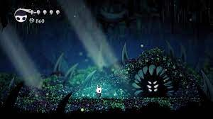
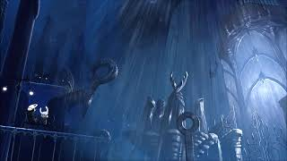
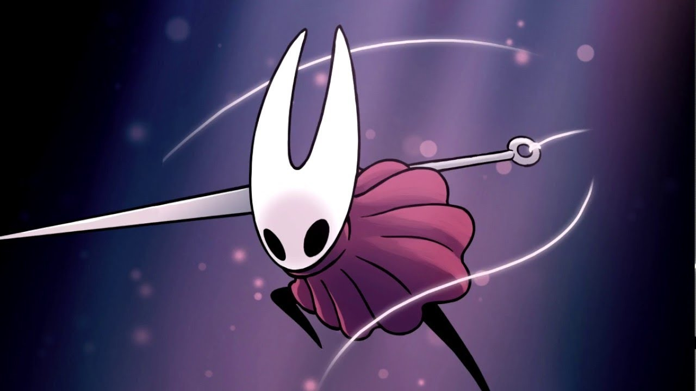
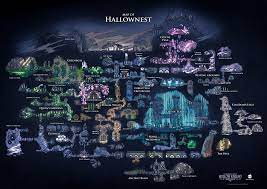
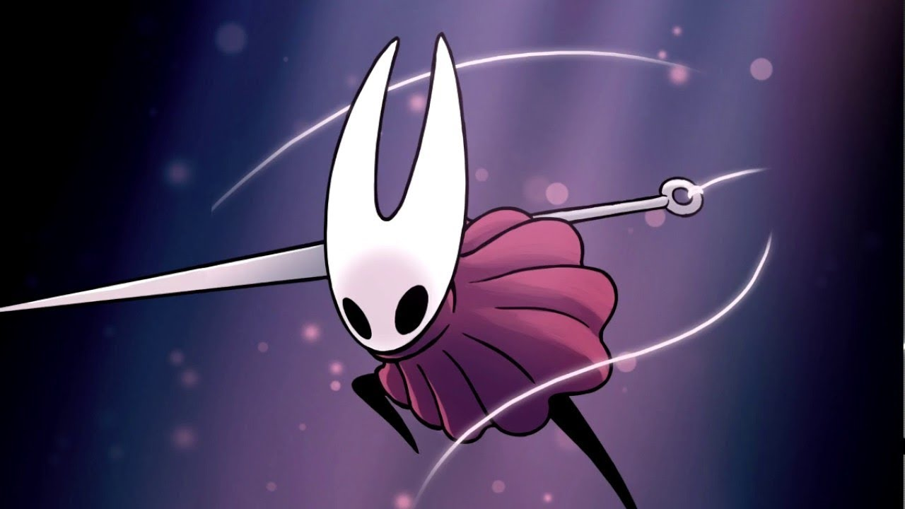
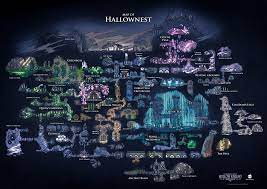

Bienvenidos a mejores comentarios de videojuegos.
PlayStation
Hollow Knight
Hollow Knight, desarrollado por Team Cherry, ofrecerá una aventura de estilo bidimensional que combinará
acción
y plataformas en un mundo de fantasía medieval, el reino de Hallownest. Incluirá animaciones hechas con
estilo
tradicional, retos para el jugador, coleccionables por desbloquear y una banda sonora única.
Esta aventura de acción, plataformas y exploración 2D nos recordará en no pocas ocasiones la gran
influencia de
FromSoftware con la saga Souls durante los últimos años en multitud de producciones y géneros. Muchos
títulos
intentan copiar su estilo de lucha, mecánicas o las funciones online. Hollow Knight toma algunos de
estos
elementos y lo lleva a un mundo de insectos. Una combinación muy curiosa de la película Bichos con arte
oscuro y
tétrico a lo Tim Burton, protagonizado por un pequeño escarabajo que se internará en catacumbas
laberínticas
repletas de enemigos, trampas y misterios.
Su jugabilidad se basa en el combate, y gracias a la rápida respuesta de los controles funciona a la
perfección,
es una delicia atacar y saltar por este mundo. Pese a la mención a la saga de rol, hay que aclarar que
es
principalmente un título un poco arcade, con personalización mínima de algunos ítems que ofrecen
ventajas pero
nada excesivamente profundo; no hay experiencia ni subida de niveles, ni un sistema de agotamiento por
atacar.
 
 



COMENTARIOS
Multicornio Rosa: Jo, se ve difícil pero precioso.
Piedras_j3j3:Metroidvania INDISPENSABLE para los amantes de los buenos videojuegos.Apartado
visual,
música y jugabilidad a la altura de los mejores. Magia pura señores.
Javier Rodríguez:Llevo unas 40 horas jugadas a Hollow Knight.
Tras esas 40 horas todavía tengo juego por delante, aunque creo que ya no me queda demasiado, sin
embargo, tengo
que decir que está siendo la mejor experiencia que estoy teniendo con un videojuego desde hace muchos
años, yo
diría que desde Half-Life 2, que lo jugué a través de Orange Box. Esto convierte a Hollow Knight en el
mejor
juego que haya jugado en una década.
Actualmente soy linuxgamer e indiegamer, así que no tengo mucho contacto con los AAA. Aun así puedo
decir que
Hollow Knight me ha parecido mucho mejor juego que Bioshock, The Elder of Scrolls: Oblivion, Tomb Raider
reboot,
los primeros The Witcher e incluso lo pongo por encima del sobresaliente Batman: Arkham City.
Si no llevo más o no me lo he pasado es porque no tengo todo el tiempo que me gustaría para jugar, pero
el juego
me tiene enganchado y lucho para sacar un buen rato a la semana para jugar, porque está siendo una
experiencia
inolvidable.
Se merece un 9.5, porque es un metroidvania de primer nivel, muy cuidado, con una
banda sonora notable. De hecho las únicas pegas que le veo es que a nivel de dificultad a veces resulta
una
montaña rusa, combinando situaciones más bien facilonas con otras donde te tiras de los pelos, y que no
tiene
una gran variedad de escenarios. Por lo demás, un juego más que redondo que recomiendo a todo aquel que
quiera
un juego desafiante y bien hecho.
Con un apartado técnico a la altura y algo más pulido (los parches han ido metiendo problemas de
rendimiento que
no estaban presentes, al menos en Linux) sin duda podríamos estar ante uno de los grandes de la
historia.
En fin, que me da que me voy a divorciar de los AAA por muchos años, por no decir para siempre, si de
vez en
cuando veo juegos tan buenos como este.
Ver más juegos de PlayStation
Volver a página principal.